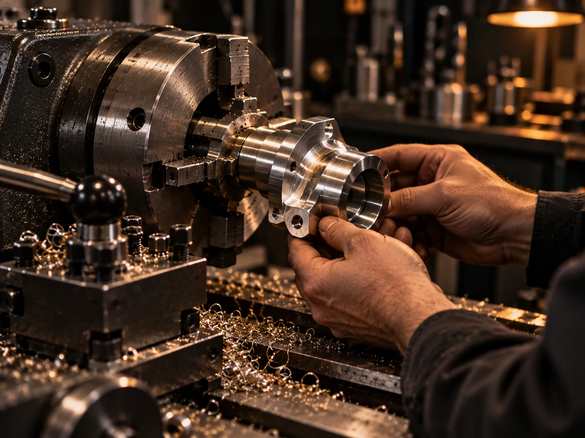
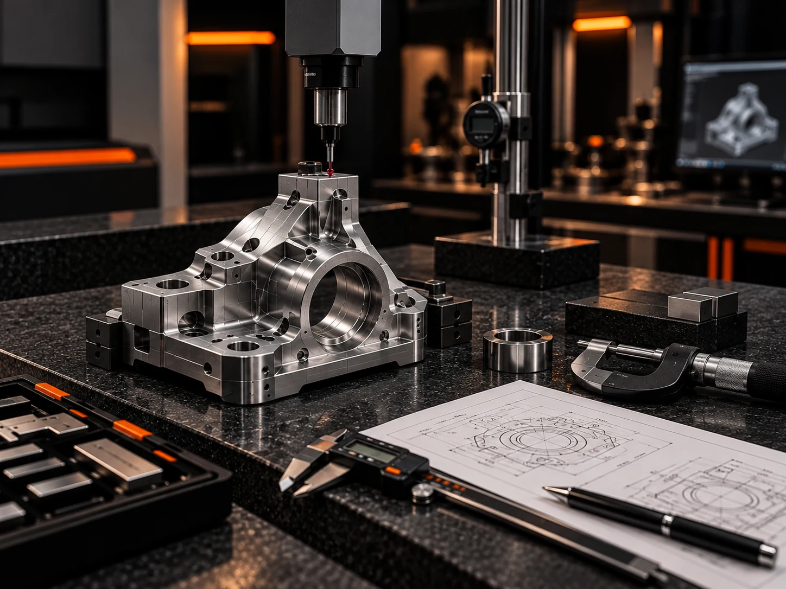
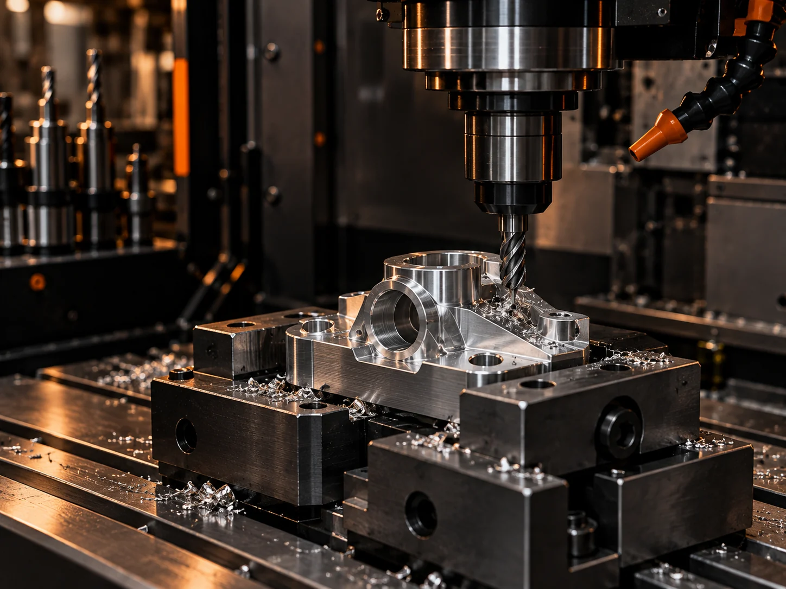
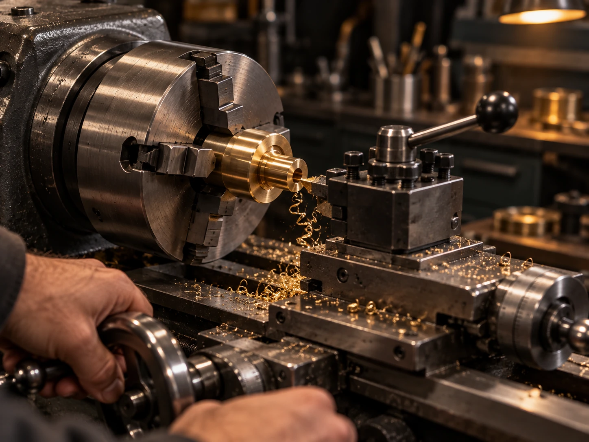

CNC-bearbejdning
Fræsning, drejning og opstilling med fokus på tolerancer, finish og procesforståelse.
FINMEKANIK / PROTOTYPER / PRÆCISIONSBEARBEJDNING
Datum Prototyping udvikler og fremstiller præcisionskomponenter og prototyper — fra CAD/CAM og CNC-bearbejdning til manuel bearbejdning, målkontrol og dokumentation.
Ydelser
Fra enkeltdele til komplekse prototyper. Jeg tilbyder fleksibel præcisionsbearbejdning med fokus på kvalitet, funktion og en effektiv proces.
Fræsning, drejning og opstilling med fokus på tolerancer, finish og procesforståelse.

Fremstilling af enkeltdele og funktionelle prototyper med fokus på præcision og dokumentation.

3D-modellering, optimering og bearbejdningsforløb tilpasset emne, materiale og maskine.

Kontrol af kritiske mål, enkel dokumentation og et teknisk overblik over det færdige resultat.
Projekter
Forskellige opgaver, samme tilgang — præcision, funktion og fokus på detaljen.
Processen
En enkel og gennemsigtig proces fra første henvendelse til færdig komponent. Tæt dialog hele vejen.
Vi taler om opgaven, dine behov og mulighederne.
Jeg udarbejder en plan for bearbejdning, materialer og eventuel dokumentation.
CNC og/eller manuel bearbejdning, med fokus på kvalitet og detaljen.
Målkontrol af kritiske mål og gennemgang af det færdige emne.
Om
Mit navn er Glen, og jeg er finmekaniker under uddannelse på TEC. Jeg gennemfører uddannelsen via SKP på TEC Frederiksberg og forventer svendebrev i april 2027.
Når jeg ikke er på hovedforløb, arbejder jeg selvstændigt med indgående opgaver fra både egne kontakter og skolens kunder — fra CAD/CAM og CNC til manuel bearbejdning og målkontrol.
Målet er at bygge videre på erfaringen i en fuldtidsstilling efter svendebrevet, mens Datum Prototyping fortsætter som platform for egne projekter og udvalgte opgaver.

Kontakt
En skitse, et billede eller et par mål er nok til at starte dialogen. Fortæl kort hvad emnet skal kunne, så tager vi den derfra.

Projekt snapshot
Specialværktøj til kontrolleret bukning.
Visualiseringer · baseret på projekt/CAD · ikke procesfotos


Projekt snapshot
CNC-fræset emne med fokus på planhed og stabil opspænding.
Visualiseringer · baseret på projekt/CAD · ikke procesfotos

Opspænding, værktøjer, WCS og operationsrækkefølge fra fremstillingen.


Udvalgt projekt
En komplet mekanisme fremstillet fra tegning til fungerende motor.
Visualiseringer · projekt- og procesbilleder · ikke procesfotos

Udgangspunktet var et eksisterende tegningssæt. Alle dele skulle fortolkes, modelleres og fremstilles, så de til sidst fungerede som én samlet mekanisme.
Målet var ikke bare at ramme enkeltmålene. Motorens funktion afhænger af, at flere dele arbejder rigtigt sammen — og derfor blev fremstillingen planlagt omkring funktion, pasning og kontrol fra starten.
Delene blev modelleret i CAD og fordelt mellem CNC og manuel bearbejdning efter geometri, tolerance og den mest hensigtsmæssige fremstillingsmetode.
Komplekse former og gentagelige features blev lagt på CNC, hvor det gav den mest kontrollerede proces.
Sammenhørende dele blev behandlet som funktionelle par, så målene blev vurderet i relation til hinanden.
Kritiske mål blev kontrolleret undervejs, så justeringer kunne foretages før den endelige samling.
De vigtigste operationer blev fordelt efter emnets form og funktion — ikke efter ønsket om at bruge flest mulige maskiner.

Base og geometrisk mere komplekse komponenter, hvor kontrolleret geometri og gentagelighed var vigtig.

Aksler, cylindriske emner og funktionelle diametre med fokus på overflade, pasning og løbende kontrol.

Plane features, boring og tilpasning, hvor den manuelle proces var enkel og direkte.
Kritisk funktion
Motorens funktion afhænger direkte af forholdet mellem cylinder og stempel. For stor frigang giver tab, mens for lille frigang skaber friktion. Derfor blev pasningen behandlet som en funktionel del af konstruktionen — ikke bare som et mål på tegningen.
Kritiske mål og pasninger blev kontrolleret løbende under fremstillingen, så fejl kunne opdages før den endelige samling.
Cylinder og stempel blev prøvet og justeret som et sammenhørende sæt, så tæthed og bevægelse kunne balanceres.
Dimensioner blev kontrolleret undervejs i processen, ikke kun efter at delen var færdigbearbejdet.
Kontrolprincipper blev brugt, hvor de gav mening, så accept eller afvisning kunne afgøres hurtigt og entydigt.
Teknisk dokumentation fra projektet. Åbner som printvenligt dokument.
Efter den endelige samling gennemførte motoren funktionstesten. De enkelte dele arbejdede sammen som planlagt, og projektet gav samtidig praktisk erfaring med samspillet mellem tolerancer, overflader og mekanisk funktion.